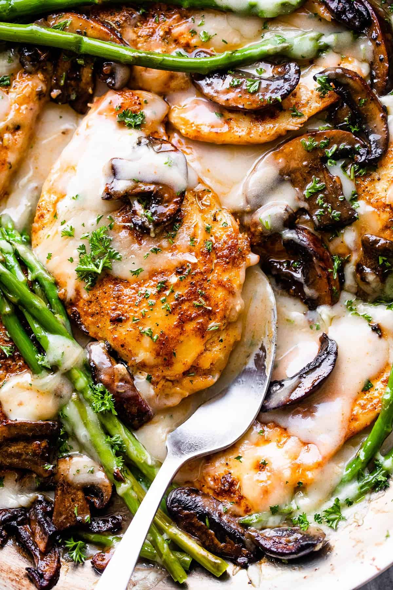

Chicken Madeira

Description
This is a delicious looking (and large) image of chicken madiera after you've done all the prep work. Sit back and admire, because you've gone and done it.
Ingredients (For the Chicken):
- 1 tablespoon olive oil
- 1 pound boneless, skinless chicken breast (thin cut)
- .5 cup mozzarella cheese
- 1 pound asparagus stalks (trimmed)
Ingredients (For the Sauce):
- 8 ounces mushrooms (sliced)
- 1.5 cups Madeira wine
- 1.5 cups beef broth
- 2 tablespoons butter
- 1.5 tablespoons corn starch (dissolved into 2 tablespoons of cold water)
Instructions:
- Heat the olive oil in a large pan over medium high heat. Season the chicken breasts on both sides with salt and pepper to taste.
- Place the chicken in the pan and cook for 4-5 minutes on each side until golden brown and cooked through. Remove the chicken from the pan; place on a plate and cover to keep warm.
- Add the mushrooms to the pan and season to taste with salt and pepper. Cook 4-5 minutes until softened.
- Add the wine and beef broth to the pan. Simmer for 7-9 minutes or until the liquid is reduced by half.
- Add the cornstarch and stir until smooth. Bring the mixture to a boil and cook for 1 minute (or until thickend).Stir in the butter until melted and incorporated into the sauce.
- Preheat the broiler. Place the chicken and asparugus on a sheet pan coated in cooking spray. Season the asparugus with salt and pepper, sprinkle the cheese over the chicken.
- Broil for 3-4 mintues or until the cheese is melted and the asparagus is tender. Remove the pan from the oven.
- Pour sauce over each chicken breast and serve, topped with parsley.